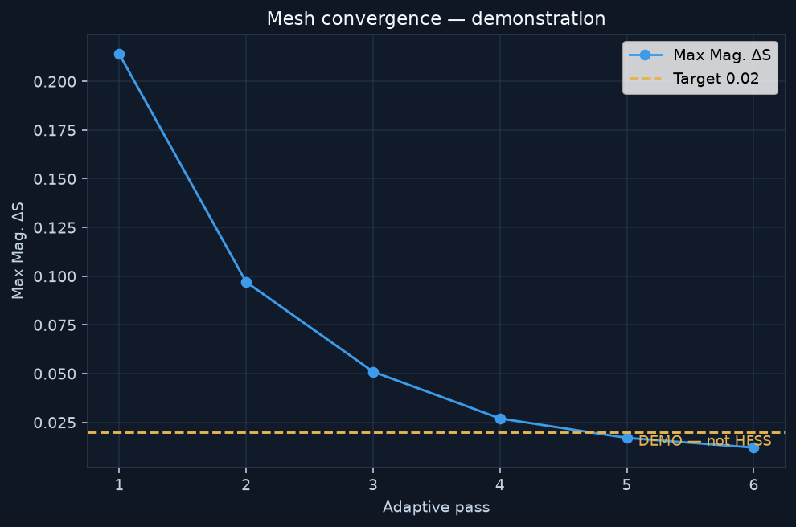

PROJECT STATUS: DEMO · Active view: DEMO
Frequency
3.035 GHz
Target: 3.035 GHz
SOURCE
S11
-19.92351068881541
Target: <= -15 dB
DEMO
VSWR
1.2244178151966643
Target: 1.1:1 – 1.4:1
DEMO
Gain
13.282030464331434
Target: 9.5 – 14.0 dB
DEMO
Directivity
13.739605369938186
Target: 10.0 – 14.5 dBi
DEMO
Axial ratio
1.339003644608063
Target: < 1.5 dB (main beam)
DEMO
Project Overview
Use the GUI buttons: Demonstrate loads existing modified-antenna data; Test in HFSS builds the live Ansys model. Both stores are kept.
Design documentation: antenna design · implementation procedure · system block, data-flow and control-flow diagrams.
- Project: Helix_3035MHz / Design: Helix_3035MHz
- HFSS available: False
- Solved: False
- Setup: Setup1 · Sweep: Sweep · Far-field: Infinite Sphere1
- Timestamp (UTC): 2026-09-03T02:58:37Z
Antenna Parameters (SOURCE)
| Item | Value |
|---|---|
| Turns | 3.0 |
| Radius | 20.94 mm |
| Pitch | 29.27 mm |
| Wire | 18 AWG · Ø 1.024 mm |
| Ground radius | 56.29 mm |
| Axial length (source) | 87.82 mm |
Calculated (not HFSS)
| Item | Value |
|---|---|
| C/turn | 131.5699 mm |
| Slant/turn | 134.7864 mm |
| Pitch angle | 12.5422° |
| N·pitch | 87.8100 mm |
| λ0 | 98.7784 mm |
| C/λ | 1.3320 |
3D Geometry

S11 / VSWR / Patterns
If status is DEMO, plots come from the existing modified-parameter ready-made dataset — not from Ansys HFSS.




Demo vs live HFSS
Demonstration data stays in results/demo/. Live Ansys extracts stay in results/live/.
| Parameter | Target | Demo (existing) | Live HFSS |
|---|---|---|---|
| S11 | ≤ -15 dB | -19.9 dB | NOT SIMULATED |
| VSWR | 1.1–1.4 | 1.22 | NOT SIMULATED |
| Gain | 9.5–14.0 dB | 13.3 dB | NOT SIMULATED |
| Directivity | 10.0–14.5 dBi | 13.7 dBi | NOT SIMULATED |
| Axial ratio | < 1.5 dB | 1.34 dB | NOT SIMULATED |
Requirements (active view)
| Parameter | Requirement | HFSS Result | Margin | Status |
|---|---|---|---|---|
| Operating frequency | 3.035 GHz (source) | 3.035 GHz (setup) | SOURCE | |
| S11 at 3.035 GHz | <= -15.0 dB (preferred -25.0 to -15.0 dB) | -19.92 dB | 4.924 dB vs -15 dB | DEMO PASS |
| VSWR at 3.035 GHz | 1.1:1 to 1.4:1 | 1.224:1 | distance to band 0.1244 | DEMO PASS |
| Directivity | 10.0 to 14.5 dBi | 13.74 dBi | 3.74 dB above min | DEMO PASS |
| Gain | 9.5 to 14.0 dB | 13.28 dB | 3.782 dB above min | DEMO PASS |
| Axial ratio (main beam) | < 1.5 dB | 1.339 dB | 0.161 dB below 1.5 dB | DEMO PASS |
Assumptions
Feed, materials, air box and solver controls are not in the source document. See ENGINEERING_ASSUMPTIONS.md and feed_and_port.html.
Feed: lumped_port_50ohm, gap 1.5 mm, Z0 50.0 Ω, copper conductors, radiation box 0.5 λ0.